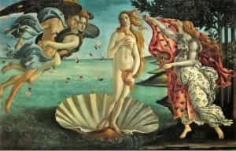

< < < Back
Flawed Blue Pill Interpretation Of Religion Covertly Pedestalizes Women – Return Of Kings
What is life? I’m sure most of you would have different answers when it comes to defining life, based on your personal experiences and the lessons that you’ve learned through your respective lives so far.
As to how I would define it: Life is a test, a continuous struggle which every man – either poor or rich, successful or loser – has to endure. That’s also how one would understand it in the context of most religions. We have been created to be tested – and we have been tested, are being tested, and will continue to be tested—for no man can escape the tests that life continually throws at us during the duration of our earthly existence.
But one of the most important and fundamental tests we face in our earthly existence is with regards to our faith, and the veracity of our beliefs. I’m sure at some point of our lives, we all go through periods of intense self reflection—either voluntary or forced on us by circumstances—which leads us to ask some of the following questions to ourselves:
- What is the purpose of our lives?
- Why are we here? Who put us here?
- Where are we going to go after we die?
- Nature reveals structure and balance, but who designed it?
- Our bodies reveal structure and balance, but who designed it?
- What is the wisdom behind the creation of the universe, and our existence?
Usually, in the search for these answers, we usually encounter the entry of religion or organized faith in our lives. Religion can liberate us, or it can shackle us indefinitely. And at the same time, as compared to other forms of beta indoctrination of men, its power is far more vast and long lasting.
The power of religious indoctrination
If there is one type of ideology which continues to hold supreme in human history, it is that of religious ideology. The power of religion is a prime example of the undeniable power of belief or faith when it comes to influencing human behavior. Robert Greene effectively postulates how the power of belief can be exploited to attain power in The 48 Laws Of Power with Law 27:
PLAY ON PEOPLE’S NEED TO BELIEVE TO CREATE A CULT-LIKE FOLLOWING
People have an overwhelming desire to believe in something. Become the focal point of such desire by offering them a cause, a new faith to follow. Keep your words vague but full of mist; emphasize enthusiasm over rationality and clear thinking. Give your new disciples rituals to perform, ask them to make sacrifices on your behalf In the absence of organized religion and grand causes, your new belief system will bring you untold power.
It’s equally undeniable to see the effect of the above law in its influence of humanity right from antiquity—either for good or worse—as flawed human nature encompasses those who practice religion, to those who don’t practice it, to those who preach it, and to those who interpret it. Everyone is thus exposed to the great danger of religious misinterpretation of scriptures, which primarily affects the “believers.”
Sometimes, these religious misinterpretations results in disillusionment and disappointment to men who’ve been misguided by it. But at the same time, a vast number continue to remain unaware, because they remain unplugged to their personal blue pill religious matrix.
Religion thus often gets a bad rap from both the insincere practicing of it by some followers, and at the same time from the overzealous blind fanaticism of its other followers. The irony might be that the scripture itself may not be flawed to begin with, as compared to its interpretation.
This problem of flawed scriptural interpretation leads to another problem for men: how the scripture pertains to dealing with, and correctly perceiving women.
The deification of women and the gradual feminization of modern patriarchal religions
The red pill has saved many men, and continues to save many others especially when it comes to their interactions with women. Not only has it made us aware of the true nature of women, it has also exposed us to the frailties and flaws of women, rendering them more human than ever before in our eyes, stripping them of the unnecessary deification and pedestalization what modern feminist societies accords them with.
In fact, in today’s world more than ever before, red pill knowledge effectively teaches an often important realization to men in exercising power over the hordes of others: if a man learns to control the women he’s dealing with, he could possibly and effectively control the men who are linked to these women.
Moving to the topic of religion, one finds that the deification of women existed since antiquity. While we might surmise that calling women “goddesses” is stupidity to begin with, primitive pagan religions deified women to a surreal form, which possibly entailed beta indoctrination for the men.
Pussy worship has thus existed both literally and metaphorically throughout human history, and in such cultures it was not uncommon to see a multitude of beta males worshiping the female form. Call a woman as Athena, Aphrodite, or whatever other fancy name—logically speaking why would (or should) a man worship a form his body has been designed to sexually penetrate to begin with?

Yet, even when venturing in the domain of organized patriarchal religions, sometimes I’ve experienced tremendous confusion and glaring contradictions in scriptural interpretation about the purpose of creation of women and their utility, even though the actual meaning of the scriptures might be actually red pill in reality. But the flawed interpretation radically distorts the actual meaning.
Much of the blame for this goes on to the blue pill leaders of modern organized religion, who seek to beta indoctrinate modern men through it. As flawed medical knowledge may destroy a person’s body, similarly flawed religious knowledge might destroy a person’s faith.
Examining scriptures of most patriarchal religions, the more I’ve read and understood them, the more I come to one realization: women are created solely for the reasons of procreation, and that of testing men. Every happiness that a man may obtain from women – whether it may be sex, children, companionship, or support – are all transitory, and subject to change.
Man’s true happiness and contentment comes from a loyal spiritual connection to a divine source which is omnipotent, and more importantly, infinite. This lends psychological stability and satisfaction to a human nature designed to constantly seek gratification in an equally ever-changing earthly world.
At the same time, if God hadn’t created and programmed the all-powerful sexual impulse in man, the purpose of creating women would itself be useless and worthless. Would a man be willing to sacrifice his resources, ideals, reputation, and dignity for something he wouldn’t want to fuck? Probably not. Human history is testament to that – men have usually sacrificed themselves for the sake of women as Napoleon Hill points out in Think and Grow Rich:
So strong and impelling is the desire for sexual contact that men freely run the risk of life and reputation to indulge it. – Napoleon Hill
Thus, women should be actually grateful for the fact that men are inherently programmed to have sex with them to begin with. If men weren’t, a woman’s vagina would not be the most overpriced commodity in the world, and would not serve as well to manipulate men today. It has always been the one thing for which men pay for with their resources, time, efforts, reputation, and sometimes even lives.
Always testing
Right from the time of Adam, women have been testing men – the Bible itself has so many examples of women who’ve led men astray from spiritual evolution, and sometimes to their literal doom. This usually occurs when men choose unconsciously women as their deities who would reward sex and companionship in return for male submission.
But at the same time, the most difficult “blue pill” concepts of even a supposedly red pill patriarchal religion to accept are when men are divinely commanded to be “patient” with women. If women are indeed a blessing for men, the questions which kept harassing my mind were:
- Does God want man to be a scapegoat for a woman’s wiles and stupidity, in spite of her numerous flaws in character and behavior?
- Why does man have to be “patient” with a fellow creature which could possibly hurt his spiritual, intellectual and moral evolution in the long run? Simply because it bears a vagina?
- Is woman really a blessing, or is a woman in reality an aesthetically appealing test (or worse, curse and source of punishment) for men – considering the innate selfishness and ingratitude of women, unchained by in modern times by the ‘religion’ of feminism?
The more I see it, the more I realize that God’s purpose of creating women was solely to test man with them, in the earthly evolution of human masculinity, and of male belief towards Him in spite of the illusionary distractions women might subject men to.
But how many realize this throughout their lives, and struggle to pass these tests? Some men don’t even manage to realize this due to the misleading interpretations of the scriptures, leading men to perceive women in an unreal, blue pill way.
Conclusion
Religion remains an undeniable force in influencing human psychology and behavior. But should we follow religion blindly even when it entails blue pill ignorance at the end? This is a question every believer and non-believer should ask themselves, when it comes to examining faith, or lack of it.
And in today’s world of lies and illusions, it becomes even more important for a “believing” man to examine his beliefs towards life, his relationships, and more so the doctrines which deal with his interaction and perception of women—for even religious misinterpretation of red pill religious doctrines is enough to lead a life of servitude to women, especially when female deification is increasingly promoted both religiously and socially in modern feminist societies.
Even supposedly red pill religions which accept the superiority of men over women are not immune to the gross misinterpretations of religious scriptures to covertly promote feminist ideology. So red pillers need to particularly beware and judge these interpretations closely and correctly, to avoid falling prey to this. This is where religion could fail the modern man: not because of the scripture itself, but more so because of its interpretation.
In the end, the question remains: if a religion teaches men dependency by seeking personal fulfillment—more so spiritual and emotional—through women, is it a red pill religion to begin with?
Read Next: Why You Shouldn’t Seek Emotional Fulfillment Through Women


{kind=link}
{kind=link}
{kind=link}
{kind=link}